전자기기기능장 (2003-03-30 기출문제)
1과목: 임의구분
1. 전구에 걸리는 전압이 10[%] 낮아진 경우 전구의 소비전력은 약 몇[%]로 되는가?
- 100
- 90
- 81
- 80
(정답률: 89%)

2. 4[μF]의 콘덴서에 100[V]의 전압을 가할 때 콘덴서에 저장되는 에너지는?
- 2×10-2 [J]
- 3×10-2 [J]
- 5×10-2 [J]
- 7×10-2 [J]
(정답률: 78%)
3. 세기 8000[AT/m]의 평등 자계내에 길이 12[cm], 세기 5[Wb]의 막대자석이 자계의 방향과 30°의 각으로 놓여 있을 때 이 자석은 얼마의 모멘트를 받는가?
- 2000[Nㆍm]
- 2400[Nㆍm]
- 2800[Nㆍm]
- 3200[Nㆍm]
(정답률: 70%)
4. 자속밀도 0.6[Wb/m2 ]의 평등 자장 안에서 길이 1[m]의 도체를 놓고 이것을 자장과 30°의 방향으로 50[m/sec]의 속도로 이동시키면 도체에는 몇 [V]의 기전력이 유도되겠는가?
- 5
- 10
- 15
- 20
(정답률: 66%)
5. 평균 반지름 5[cm], 감은 횟수 10회의 원형 코일 중심의 자장 세기가 100[AT/m]일 때 코일에흐르는 전류는?
- 1[A]
- 2[A]
- 3[A]
- 4[A]
(정답률: 65%)
6. 극수가 6극인 50[Hz]용 3상 유도전동기가 있다. 슬립이 4[%]일 때 이 전동기의 회전수는 몇 [rpm] 인가?
- 940
- 960
- 980
- 1000
(정답률: 90%)
7. 키르히호프의 법칙에 대한 설명 중 옳지 않은 것은?
- 회로망에서 임의의 접속점에 유입하는 전류와 유출하는 전류의 대수합은 0이다.
- 회로망인 임의의 폐회로에서 기전력의 총합은 전압 강하의 총합과 같다.
- 제1법칙은 전류법칙, 제2법칙은 전압 법칙이다.
- 이 법칙은 선형소자로만 이루어진 회로에 적용된다.
(정답률: 92%)
8. R-L-C 직렬회로에서 임피던스가 최소가 되기 위한 조건은?
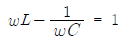
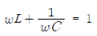
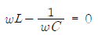
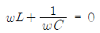
(정답률: 68%)
9. 플레밍의 왼손 법칙에서 엄지손가락의 방향은?
- 전류의 반대방향
- 자력선의 방향
- 전류의 방향
- 힘의 방향
(정답률: 88%)
10. 그림과 같은 회로에서 저항 R에 흐르는 전류는?
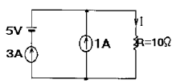
- 3[A]
- 4[A]
- 5[A]
- 6[A]
(정답률: 82%)
11. 이미터 바이어스(bias) 회로에서 안정도에 영향을 주지 않는 것은?
- Re(이미터 저항)
- Rb(=R1//R2, 바이어스 저항)
- hfe(=β, 전류이득)
- RL(부하저항)
(정답률: 77%)
12. 푸시풀(push-pull)B급 Tr 전력 증폭기에 사용되는 Tr의 컬렉터 손실(Pc)은 희망 최대 출력의 몇 배 이상이어야 하는가?
- 2 배
- 1/2 배
- 5 배
- 1/5 배
(정답률: 84%)
13. 미분 회로에서 시정수(RC)와 펄스폭(τ)은 어떠한 관계가 있는가?
- RC=τ
- RC<<τ
- RC>>τ
- RC=0.7τ
(정답률: 75%)
14. 잡음지수 8[dB]이고, 이득 10[dB]인 증폭기에 잡음지수 11[dB], 이득 10[dB]인 증폭기를 직렬로 했을 때의 종합 잡음지수는?
- 1.9 [dB]
- 8 [dB]
- 9 [dB]
- 19 [dB]
(정답률: 82%)
15. 다음 마이크로파용 다이오드 가운데서 avalanche 효과를 이용한 것은?
- SRD(Step Recovery Diode)
- PIN 다이오드
- Gunn 다이오드
- Impatt 다이오드
(정답률: 71%)
16. 아래의 논리 회로를 논리 식으로 표시하면?
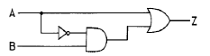
- Z=A+B
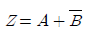
- Z=A+AB
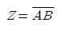
(정답률: 76%)
17. JK 플립플롭에서 J=K=1이고, 클럭 펄스가 가해진 뒤의 출력 상태는? (단, 클럭 펄스가 가해지기 전의 상태를 Q라고 한다.)
- 0
- 1
- Q
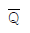
(정답률: 95%)
18. EXCLUSIVE NOR GATE는 어느 것과 같은가?
- ADDER
- COMPARATOR
- SUBTRACTOR
- DECODER
(정답률: 76%)
19. 반가산기에서 자리올림(carry)을 바르게 나타낸 것은?
- A + B
- A⋅B
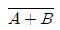
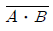
(정답률: 82%)
20. 아래의 동기 카운터는 몇 진으로 동작하는가?
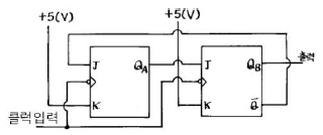
- 2진
- 3진
- 4진
- 5진
(정답률: 80%)
2과목: 임의구분
21. 논리 대수에서
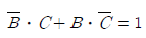
이 성립되기 위한 조건은?- B=0, C=0
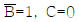
- B=1, C=1
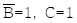
(정답률: 65%)
22. T 플립-플롭을 사용하여 8분주 회로를 만들 때 최소 몇 개가 필요한가?
- 2개
- 3개
- 4개
- 5개
(정답률: 78%)
23. 합성 동기 신호에서 수평 동기 신호를 분리하는데 사용하는 회로는?
- 미분 회로
- 적분 회로
- 디앰퍼시스 회로
- 프리앰퍼시스 회로
(정답률: 85%)
24. 라스터(raster)는 나오지만 소리와 화면이 나오지 않는다. 그 이유에 적합한 것은?
- 고압 전원 회로의 이상
- 수평 출력부의 전압 이상
- 음성 중간 주파 트랜스의 불량
- 영상 중간 주파 증폭 회로의 고장
(정답률: 80%)
25. 컬러 TV의 조정에서 대역 증폭회로의 조정에 사용하지 않는 계측기는?
- 오실로스코프
- 스위프 마커 제너레이터
- 딥 미터
- 마커 제너레이터
(정답률: 73%)
26. 다음 TV 회로 중에서 영상 중간주파 회로의 대역폭이 규정보다 좁을 경우 화면에 나타나는 증상은?
- smear
- ringing
- ghost
- hunting
(정답률: 69%)
27. color TV의 조정 작업이 아닌 것은?
- white balance 조정
- wow flutter 조정
- purity 조정
- convergence 조정
(정답률: 83%)
28. 다음은 흑백 TV CRT 회로의 일부이다. 이 회로에서 C와 R의 작용으로 적당한 것은?
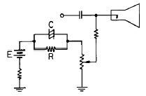
- 휘도 조정회로
- 포커스 회로
- 귀선 소거회로
- 스포트 킬러회로
(정답률: 67%)
29. Audio system block diagram에서 (A)항의 기능으로 옳은 것은?
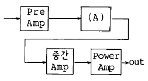
- EQ Amp
- Tone control Amp
- Speaker protector
- Power Supply
(정답률: 73%)
30. 고주파 유도가열 장치로서 가열되는 경우는?
- 강철의 표면처리
- 금속의 용접
- 목재의 건조
- 비닐시트 접착
(정답률: 67%)
31. OP 앰프를 사용한 회로의 해석에서 기본이 되는 가상 접지 이론이란?
- 두 입력단자의 전압이 같고, 두 입력단자에 흐르는 전류가 같다.
- 두 입력단자의 전압이 모두 0[V]이고, 두 입력단자에 흐르는 전류가 0[A]이다.
- 두 입력단자의 전압이 같고, 두 입력단자의 신호전류가 0[A]이다.
- 두 입력단자의 전압이 모두 0[V]이고, 두 입력단자에 흐르는 신호전류는 같다.
(정답률: 49%)
32. 트랜지스터 증폭기에서 직렬전압귀환을 걸었을 때는 귀환을 걸지 않을 때에 비해 입력 임피던스 출력 임피던스가 변한다. 다음 중 옳게 설명한 것은?
- 입력 임피던스와 출력 임피던스 모두 증가한다.
- 입력 임피던스는 증가하고, 출력 임피던스는 감소한다.
- 입력 임피던스는 감소하고, 출력 임피던스는 증가한다.
- 입력 임피던스와 출력 임피던스 모두 감소한다.
(정답률: 69%)
33. 마이크로컴퓨터에서 인터럽트를 이용하여 데이터의 입ㆍ출력을 행할 경우 데이터 하나하나에 대해 CPU가 제어하기 때문에 고속처리를 할 때는 비효율적이다. 이 문제를 해결하기 위해 CPU를 통하지 않고 입ㆍ출력장치와 메모리 사이에서 데이터를 주고받는 방식을 무엇이라고 하는가?
- CTC
- PIPO
- DMA
- NMI
(정답률: 92%)
34. 최근에 활용되고 있는 CDP(컴팩트 디스크 플레이어)에서는 아날로그 신호를 디지털 신호로 변환하기 위해 PCM방식을 적용하는데 아날로그 신호를 디지털 신호로 변환하는 PCM의 과정을 순서대로 나열한 것은?
- 저역필터→ 표본화→ 양자화→ 부호화
- 표본화→ 저역필터→ 부호화→ 양자화
- 표본화→ 부호화→ 양자화→ 저역필터
- 저역필터→ 양자화→ 표본화→ 부호화
(정답률: 94%)
35. 그림의 회로에서 교류전압 110[V]를 인가하였을 때 전류 [I]는?
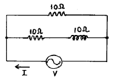
- 3+j11
- 3-j11
- 1.5+j5.5
- 16.5-j5.5
(정답률: 79%)
36. 전기력선의 성질을 나타낸 것 중 옳지 않은 것은?
- 전기력선은 등전위면과 직교한다.
- 두 전기력선은 서로 교차하지 않는다.
- 전기력선은 부(-) 전하에서 나와 정(+) 전하로 들어간다.
- 한 점에서의 전기력선의 밀도는 그 점에서의 전계의 세기를 나타낸다.
(정답률: 78%)
37. 그림의 회로에서 출력 Vo는? (단, R=R1=R2=R3)
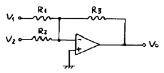
- Vo = -(V1+V2)
- Vo = V1+V2
- Vo = V1-V2
- Vo = -(V1-V2)
(정답률: 82%)
38. 다음의 이상적인 연산증폭기의 특징 중 옳지 않은 것은?
- 전압 이득은 무한대이다.
- 대역폭이 무한대이다.
- 출력 임피던스가 무한대이다.
- 오프셋(offset)은 0 이다.
(정답률: 34%)
39. 다음 그림과 같은 회로에서 AB 단자에 V=Vm sinwt[V]를 공급했을 때, AC 양단의 전압은?
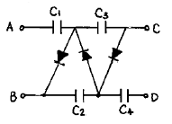
- 2Vm
- 3Vm
- 4Vm
- 5Vm
(정답률: 72%)
40. 데이터를 전송하기 위한 동작순서로써 옳은 것은?
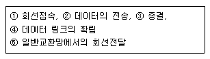
- ①-②-③-④-⑤
- ①-④-②-⑤-③
- ①-②-④-⑤-③
- ①-④-②-③-⑤
(정답률: 58%)
3과목: 임의구분
41. 저항 30[Ω]과 유도리액턴스 40[Ω]을 병렬로 접속하고, 120[V]의 교류 전압을 가할 때 전전류는 몇 [A]인가?
- 3
- 4
- 5
- 7
(정답률: 69%)
42. 슈퍼헤테로다인 수신기에 고주파 증폭 회로를 부가하면?
- 감도가 나빠진다.
- 선택도가 좋아진다.
- 영상신호 방해가 증가한다.
- 신호대 잡음비가 낮아진다.
(정답률: 86%)
43. 국부 발진주파수가 1000[kHz]일 때, 950[kHz]의 고주파를 수신하여 헤테로다인 검파하면 출력 주파수는 몇 [kHz]인가?
- 25
- 50
- 75
- 100
(정답률: 84%)
44. 컴퓨터와 계측기 사이의 데이터 전송용 표준 인터페이스 규약은?
- RS-422
- RS-232C
- IEEE-488
- CENTRONICS
(정답률: 89%)
45. 제어계의 전달함수가
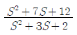
일 때 특성근은?- -1, -2
- -3, -4
- 1, 2
- 3, 4
(정답률: 64%)
46. 자동 제어계의 주파수 영역 내에서의 성능을 설명해 주는 정수가 아닌 것은?
- 공진 주파수(resonance frequency)
- 분리 도(cutoff rate)
- 대역 폭(band width)
- 계단 응답(step response)
(정답률: 80%)
47. 물체의 위치나 각도 등을 제어하는데 사용하는 제어 방식은?
- PID 제어
- 시퀸스(sequence) 제어
- 프로세스(process) 제어
- 서보(servo) 제어
(정답률: 74%)
48. 초음파의 응집 작용을 이용한 것이 아닌 것은?
- 초음파 집진기
- 기름이나 타르의 탈수
- 공장에서 나온 폐수의 처리
- 화장품 제조
(정답률: 78%)
49. 고주파 전계를 도체에 가하여 도체 내에서 발생한 와류손을 이용하여 도체를 발열시키는 것은?
- 유전가열
- 유도가열
- 초음파가공
- 전자빔 가열
(정답률: 84%)
50. 증폭기의 톤 제어용으로 사용하는 가변 저항기의 형은?
- A형
- B형
- C형
- D형
(정답률: 62%)
51. 조셉슨 소자는 트랜지스터보다 소비전력이 적고 동작속도도 빠르며 집적도가 높아 차세대 반도 소자로서 사용되고 있다. 조셉슨 소자에 사용되고 있는 재료는?
- 레이저 재료
- 초전도 재료
- 루미네선스 재료
- 방사선 재료
(정답률: 63%)
52. 바랙터 다이오드의 설명으로 옳은 것은?
- 가변저항 역할을 한다.
- 가변용량 역할을 한다.
- 가변 인덕턴스 역할을 한다.
- 가변 콘덕턴스 역할을 한다.
(정답률: 84%)
53. 녹음기에서 테이프를 일정한 속도로 움직이게 하는 것은?
- 캡스턴과 핀치롤러
- 핀치롤러와 텐션암
- 캡스턴과 테이프가이드
- 테이프가이드와 테이프패드
(정답률: 89%)
54. de morgan 정리에 해당하는 것은?
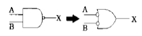
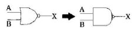
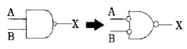
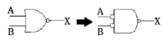
(정답률: 67%)
55. 그림의 OC 곡선을 보고 가장 올바른 내용을 나타낸 것은?
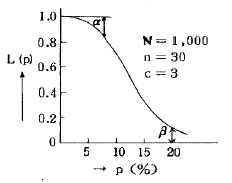
- α : 소비자 위험
- L(P) : 로트의 합격확률
- β : 생산자 위험
- 불량율 : 0.03
(정답률: 88%)
56. 품질관리 활동의 초기단계에서 가장 큰 비율로 들어가는 코스트는?
- 평가코스트
- 실패코스트
- 예방코스트
- 검사코스트
(정답률: 85%)
57. PERT/CPM에서 Network 작도시 →은 무엇을 나타내는가?
- 단계(event)
- 명목상의 활동(dummy activity)
- 병행활동(paralleled activity)
- 최초단계(initial event)
(정답률: 67%)
58. 신제품에 가장 적합한 수요예측 방법은?
- 시계열분석
- 의견분석
- 최소자승법
- 지수평활법
(정답률: 78%)
59. 관리도에 대한 설명 내용으로 가장 관계가 먼 것은?
- 관리도는 공정의 관리만이 아니라 공정의 해석에도 이용된다.
- 관리도는 과거의 데이터의 해석에도 이용된다.
- 관리도는 표준화가 불가능한 공정에는 사용할 수 없다.
- 계량치인 경우에는 x-R 관리도가 일반적으로 이용된다.
(정답률: 86%)
60. 다음은 워크 샘플링에 대한 설명이다. 틀린 것은?
- 관측대상의 작업을 모집단으로 하고 임의의 시점에서 작업내용을 샘플로 한다.
- 업무나 활동의 비율을 알 수 있다.
- 기초이론은 확률이다.
- 한 사람의 관측자가 1인 또는 1대의 기계만을 측정한다.
(정답률: 82%)